《计算机组成与设计》部分历年题目题解¶
📖 阅读信息
阅读时间约 30 分钟 | 约 5641 字 | 约 16 个公式 | 约 101 行代码
本文参考了中文版 RISC-V 手册的内容。在这里获取 RISC-V 手册。
感谢 syx 学长整理的试卷资料🤗
19-20年¶
观前提示，题目是基于MIPS的，我做了部分改动以适应 RV32I。
一、选择题（共 10 小题，每小题 3 分，共 30 分）¶
1.以下 RV32I 寄存器中，用来存放返回地址的寄存器是：（）
A、a0-a7
B、a0-a1
C、ra
D、sp
C。
ra寄存器是存放返回地址的寄存器，常配合jal指令使用。
a0-a7为参数寄存器，用于存放调用函数的参数
a0-a1同时也为值寄存器，用于存放函数的返回值。
sp为栈指针，指向栈顶。具体各个寄存器的用处见下图。
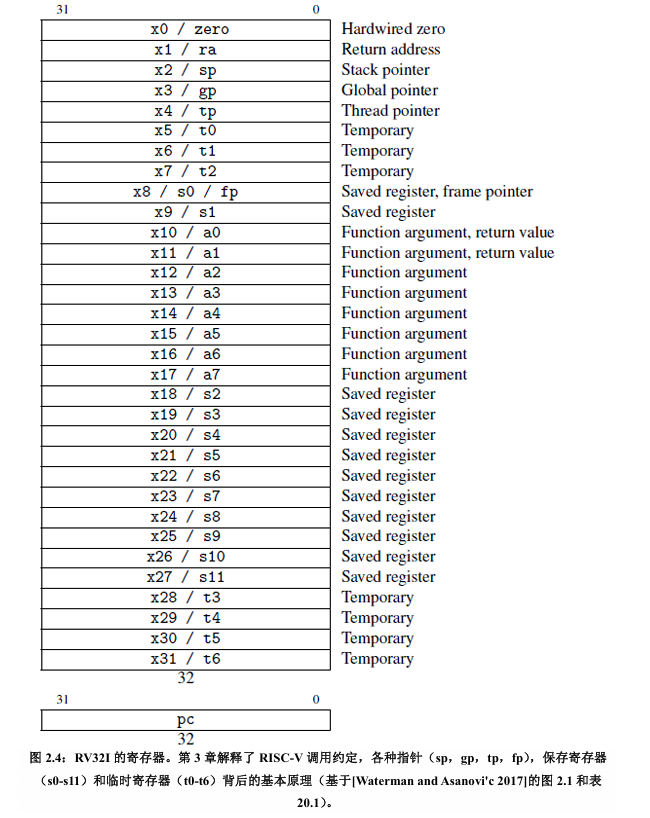
2.假定执行一条指令最多划分为 IF、ID、EX、MEM、WB 等 5 个阶段，各阶段时间分别为：IF 阶段 180ps，ID 阶段 150ps，EX 阶段 200ps，MEM 阶段 220ps，WB 阶段 150ps，对于指令 addi t1, t2, 20，分别按照单周期方式、多周期方式、流水线方式执行，则执行该单条指令花费总时间最少的方式是：（）
A、单周期方式
B、多周期方式
C、流水线方式
D、不确定
B。
单周期方式：总执行时间由耗时最长的数据通路决定，因此尽管没有从内存读数，仍然要计算 MEM 段的时间，耗时为 180+150+200+220+150=900ps。
多周期方式：每一个阶段对应一个周期，周期时间为也是耗时最长的数据通路也就是 MEM 段，但是 add 没有这个操作因此只需要 4 个周期也就是 880ps。
流水线方式：周期时间为耗时最长的数据通路，因此耗时为 220*5=1100ps
注意本题说的是执行单条指令，因此流水线的优势无法体现。
3.采用组合逻辑实现多周期 CPU 的有限状态机时，其输出与输入关系为：（）
A、输出控制信号仅与当前状态有关
B、输出控制信号与当前状态和输入 OP 有关
C、下一状态仅与当前输入 OP 有关
D、下一状态与当前状态和输入 OP 有关
A。
题目问的是输出和输入的关系，不选 CD，有限状态机的输出控制信号就是状态，只和当前状态有关，不理解的看下图：
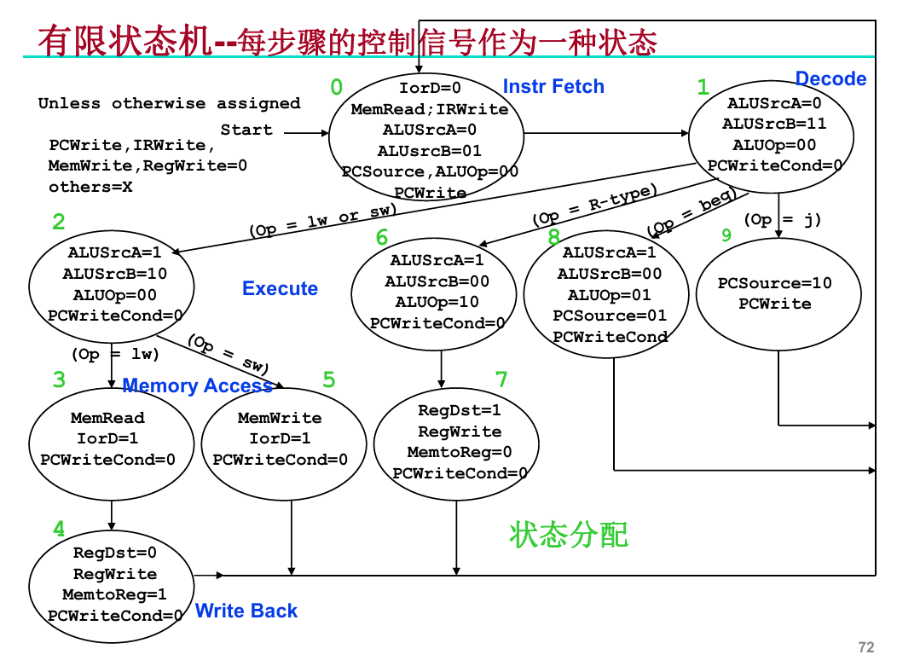
4.以下指令，理论上跳转范围最大的为：（）
A、J 指令
B、JAL 指令
C、JR 指令
D、BEQ 指令
C。
本题看起来需要记忆 rv32i 的指令集格式，实际上确实要记，不过不用那么麻烦。
j指令和jal指令一样，因为j imm就是jal x0, imm的简写。支持的跳转范围就是 imm*2 也就是 2^20 bytes
jr指令就是jalr x0, rs1, 0的简写。支持的跳转范围是字长的范围，也就是 2^32 bytes
beq x0, x1, imm里面，imm 更短只有 12 bits，因此支持的跳转范围是 2^13 bytes
5.以下属于不挥发型存储器的为：（）
A、SDRAM
B、SRAM
C、DRAM
D、FLASH
D。
SDRAM 就是一种 DRAM，原理都是电容，需要上电刷新。掉电数据丢失。
SRAM 依靠触发器高电平锁存数据，需要上电。
FLASH 也就是闪存，依靠的是门阵列的动态烧录，掉电数据不丢失。
6.在读某个虚拟地址单元时，发生 TLB 缺失、页表命中、Cache 命中，则访问该单元全过程共需访问主存次数为：（）
A、1
B、2
C、3
D、4
A。
见下图即可。
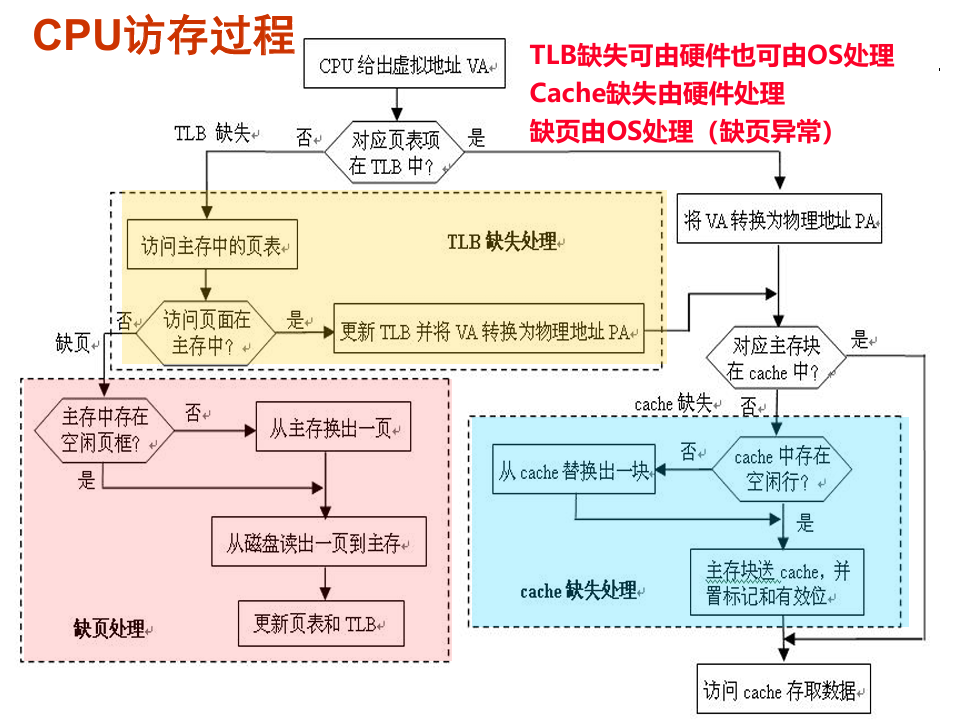
7.关于流水线冒险检测的说法，正确的为：（）
A、冒险检测机制可以避免阻塞
B、冒险检测机制主要通过旁路以减少流水线气泡
C、冒险检测机制主要是检测分支冒险
D、冒险检测机制可以通过阻塞或清除手段避免指令序列出错
D。
A 项，对 Load-Use 冒险而言，检测机制不能避免阻塞。
B 项，说的是转发机制。
C 项，冒险检测主要检测数据冒险。分支冒险不需要检测。
8.磁盘上记录面 N 的磁道 M 存储数据已满时，如需继续存放，以下哪种方式比较合理：（）
A、存放到记录面 N 的 M+1 磁道
B、存放到记录面 N 的随机磁道
C、存放到记录面 N+1 的 M 磁道
D、存放到随机记录面的随机磁道
C。
根据局部性原则，肯定不选 B 或者 D。由于 A 要移动磁头，而 C 无需移动磁头，时间更短。
9.计算机将外设端口与存储器进行统一编址时会导致：（）
A、需设置单独指令访问外设端口空间
B、存储器地址空间减少
C、外设端口可以直接访问存储单元
D、访问外设端口速度更快
B。
A 项，说的是独立编址。
B 项，由于统一编址会占用编址空间，留给存储器的地址空间自然变小了。
C 项，说的是 DMA。
D 项，由于统一编址要过一遍片选，可能会更慢。
10.在某指令 K 执行时检测到外部中断事件后，以下正确的说法为：（）
A、执行完该指令后进入中断处理
B、外部中断事件是不可屏蔽的
C、外部中断处理是不可嵌套的
D、外部中断处理完后返回指令 K 继续执行
A。
B 项，不可屏蔽的外部中断很少，比如电源问题等。其他设备发出的外部中断，加入一个逻辑门就可以屏蔽。
C 项，显然可以。
D 项，正确的说法是 A 项。
二、计算题（共 4 小题，20 分）¶
1.（共 6 分）某程序 P 在机器 A 上编译执行，花费总时间为 15 秒。现对 A 进行改造如下：时钟频率增加 25%，同时更换编译器使得执行程序的指令总数减少 25%，平均 CPI 增加 20%，功耗增加 10%。请问：
（1）程序 P 在改造后的机器 A 上执行时间为多少秒？
（2）改造后较之改造前机器性能加速比为多少？
（1）考虑有 \(x\) 条指令需要 \(c\) 个周期完成，CPI = \(c/x\)，那么改造后需要的时间周期数为 \(0.75x\times 1.2c/x=0.9c\)，而时间计算得到 \(0.9c \times 15 / c \times 1/1.25=10.8\)s.
（2）加速比=原始执行时间 / 改进后执行时间 = \(15/10.8 = 138.9\%\)
2.（共 7 分）若有如下 3 个 IEEE 单精度数，分别为：X=0x00400000，Y=0x00400000，Z=0x80C00000，请分别计算：
（1）(X+Y) + Z
（2）X + (Y+Z)
IEEE float32 = S1 E8 M23 我们拆开：
x = y = 0 | 000 0000 0 | 100 0000 0000 0000 0000 0000 = 0.5 * 2^-126 = 1 * 2^-127 是非规格化数
z = 1 | 000 0000 1 | 100 0000 0000 0000 0000 0000 = -1.5 * 2^-126
(1) 先计算 X+Y = 1 * 2^-126，再加上 Z 得到 -0.5 * 2^-126 结果为 -X 也就是 0x80400000
(2) 没有大数吃小数也没有舍入误差，因此结果不变。
代码验证如下：
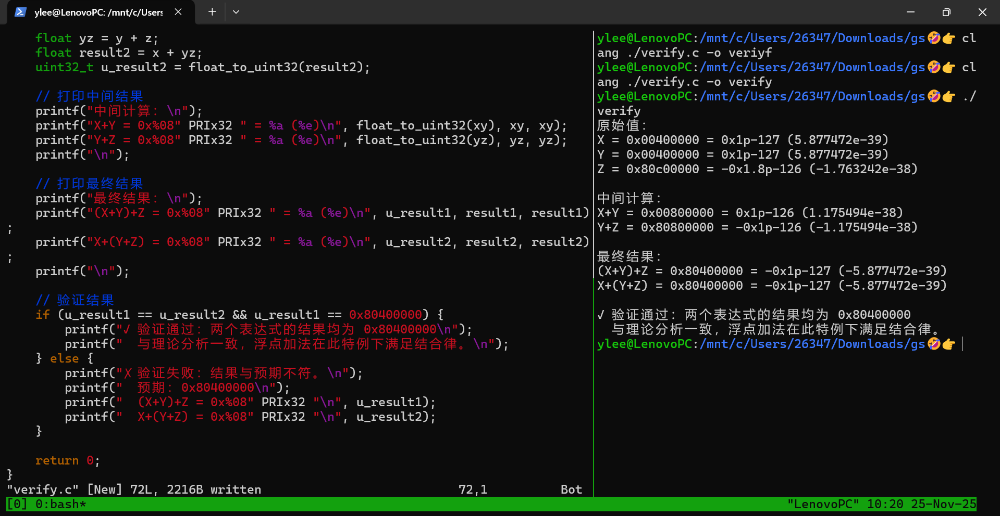
3.（共 7 分）假定 CPU 时钟频率为 2GHz，配备了 2 级缓存，其中 L1Cache 的命中访问时间为 1 时钟周期，命中率 90%，L2Cache 的命中访问时间为 10 时钟周期，命中率 80%，主存访问时间 300 时钟周期。请问：
（1）该缓存系统的总体命中率是多少？
90% 的指令在 L1 级命中，剩下的 10% 里面，80% 在 L2 级命中。总的命中率是 98%。
（2）单次访存缓存系统的平均时间是多少（以纳秒为单位）？
90% * 1 + 8% * (10+1) + 2% * (300+10+1) = 8 Cycs，由于周期 2 GHz 也就是一个周期 0.5 ns，所以期望时间为 4ns
（3）采用二级缓存与仅采用一级缓存的加速比是多少？
仅采用一级缓存，需要 90% * 1 + 10% * (300+1) = 31 Cycs，加速比为 31 / 8 = 3.875
三、分析解答题（共 4 小题，50 分）¶
1.（共 10 分）在指令存储器如下地址处有以下指令，假定 x12 初值为 0xAABBCCDD，请填空：
（1）20000H：bne x8, x8, 2000H，则该指令执行完后，后续指令的地址为：（）
x8 恒等于 x8，所以 bne 不跳转， pc = pc + 4。后续为 20004H
此外在汇编上，为了方便这里的立即数就是跳转偏移量，不需要移位。
（2）20004H：beq x7, x7, 1000H，则该指令执行完后，后续指令的地址为：（）
beq 要跳转，pc = pc + imm = 20004H + 1000H = 21004H
（3）30008H：j 10000H，则该指令的跳转目标地址为：（）
j = jal x0, imm，因此目标是地址 30008H + 10000H = 40008H
（4）40008H：addi x9, x0, 500H，则该指令执行完后，寄存器 x9 值为：（）
x9 = x0 + imm = 0 + 500H = 500H
（5）
50008H：sw x12, 4(x13)
5000CH：lb x12, 4(x13)，则该指令执行完后，寄存器 x12 值为：（）
lb = Load Byte，加载字节，从地址上看，其实就是 x12 的低位字节，即 0xFFFFFFDD
50010H：addi x12, x12, 0x56，则该指令执行完后，寄存器 x12 值为：（）
0xDD+0x56 = 0x33 (模256)，因此结果是 0x00000033
（6）60008H：slli x9, x8, 4，该指令格式属于（）型指令，其机器码对应 rs2、rs1、rd 字段分别为：（）、（）、（）。
slli = Shift Left Logical Immediate 是 I 型指令。rd = 9, rs1 = 8, rs2 = 0（其实对应的是 shamt 字段，因为是 I 型指令。）
关于指令的分型依据：
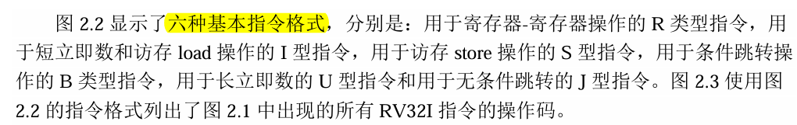
2、（共 10 分）¶
假设下列 RV32I 代码在一个 5 级流水的处理器上运行，该流水线有冒险检测、有到 ID 与 EX 级的完全旁路。假设在 ID 级执行分支，采用延迟槽而且在延迟槽中的指令是分支指令的后续相邻指令，解答以下问题。
尽管我们的教材介绍了延迟槽技术，但现代的 RISC-V 实现一般不使用这一技术。
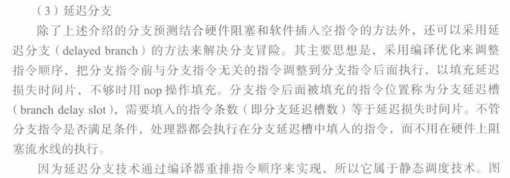
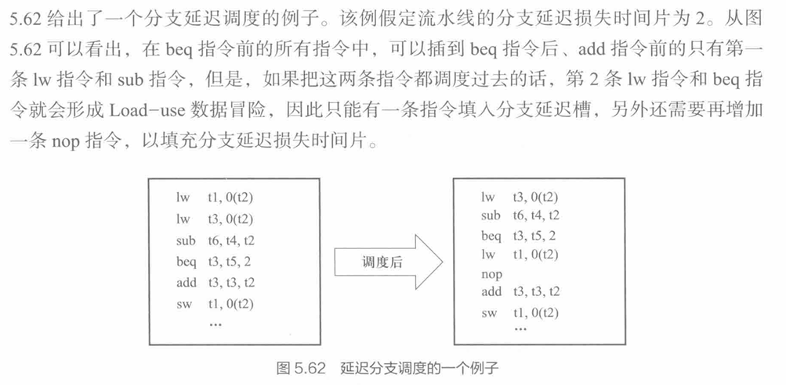
并且 RISC-V 手册对其进行了抨击：
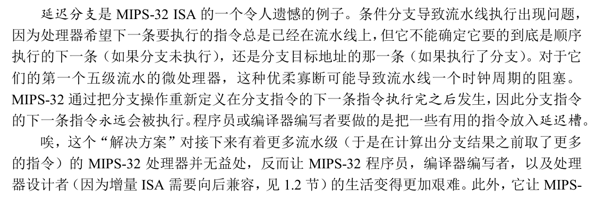
由于原试题是基于 MIPS 的，并且教材里面有，因此本题也保留。
（1）画出该指令序列的流水线执行图；
（2）指出执行过程中哪些位置用到何种旁路；
EX/M 到 ID 级和 EX/M 到 EX 级的转发。
（3）总的执行时间是多少周期。
如上图，16 周期。
3、（共 18 分）¶
对于一个 4 路组相联映射的 Cache，采用下面的 32 位主存地址格式来访问 Cache。
| Block Tag | Set Index | Byte Offset inside Block |
|---|---|---|
| 31-11 | 10-5 | 4-0 |
（1）该 Cache 共有多少数据块，可划分为多少组，所有数据块的总容量是多大？（单位:Byte）
每个 block 有 2^5 = 32 bytes，一共 2^6 = 64 组，每一组 4 块。一共就是 256 块。容量是 256 * 32 = 8192 Bytes
（2）为方便 Cache 访问，请为该 Cache 设计合理的标签（tag）、有效位（vf）、理想替换位（rf）、脏位（df）等附加信息域，形成一个完整的 Cache 结构，并计算该完整 Cache 的总体容量（单位：bit）；
vf 用来冷启动 cache，df 用来写回主存，这俩标志位只需要 1 个 bit；rf 需要覆盖到每一组的所有路，也就需要 2 bits。那么每一个 block 就需要 21(tag) + 1(vf) + 1(df) + 2(rf) = 25 位的附加信息，以及 32*8 = 256 bits 的数据，一共的容量就是 256 * (256 + 25) = 71936 bits
（3）从上电开始给出如下 10 个字节地址：0、2049、30、200、300、6144、4095、4096、208、8193，试分析该地址序列的访问过程，并按照 LRU 算法，说明有哪些 Cache 块被替换？总的块命中率是多少？
替换 Set = 0, tag = 1 的块，命中率 20%
4、（共 12 分）¶
考虑一个采用 5 位校验位来保护 8 位数据信息的汉明码 SEC/DED，并假设编码的位编号是从 MSB（Most Significant Bit）向 LSB（Least Significant Bit）方向增大。如果接收方接收到的值为 0x1E54，请判断该编码是否有错，并说明判断依据？如果有错，请指出错误位置并纠正，还原为正确的汉明码并提取 8 位原始数据信息。
21-22年¶
观前提示，题目是基于MIPS的，我做了部分改动以适应 RV32I。
一、选择题(共10小题,每小题2分,共20分)¶
1、假设将系统中的某一部件处理速度加快到10倍,且该部件在原处理时间中占40%,则采用加速措施后,整个系统的性能能提高到( )倍｡
A. 1
B. 1.56
C. 2
D. 2.5
B。
一开始的执行时间是 0.4 + 0.6 = 1s，加速后执行时间是 0.04 + 0.6 = 0.64s，性能提高到 1 / 0.64 = 1.56 倍。
2、某计算机主频为1.2GHz,其指令分为4类,它们在基准程序中所占比例及CPI如下｡
| 指令类型 | 所占比例 | CPI |
|---|---|---|
| A | 50% | 2 |
| B | 20% | 3 |
| C | 10% | 4 |
| D | 20% | 5 |
则该机的MIPS数是:( )
A. 100
B. 200
C. 400
D. 600
C。
MIPS = Million Instructions Per Second. 该程序平均 CPI 为 1 + 0.6 + 0.4 + 1 = 3，也就是说：1s 执行 1.2G 个周期，平均每个指令要花 3 个周期，也就是说 1s 执行 400M 个指令。
3、已知带符号整数用补码表示,变量x、y、Z的机器数分别为FFFDH、FFDFH、7FFCH下列结论中,正确的是( )
A. 若x、y和Z为无符号整数,则 \(z<x<y\)
B. 若x、y和Z为无符号整数,则 \(x<y<z\)
C. 若x、y和Z为带符号整数,则 \(x<y<z\)
D. 若x、y和Z为带符号整数,则 \(y<x<z\)
D。
如果是无符号，我们直接按字面大小比较即可：\(z<y<x\)
如果是有符号，首先 \(z>0,x,y<0\)，划定正负性之后，同号数的比较和字面大小的比较是一致的。因为负数补码字面量转换成原数字只需要减去一个固定的偏移量即可。
4、对于指令bne t0, s5, Exit, 当前指令的地址为80008(十进制), 当前指令的 RV32I 机器码为 0x01529463,那么该条指令发生跳转时,会跳转到下列哪个地址?( )
A. 80012
B. 80020
C. 80016
D. 80024
C。
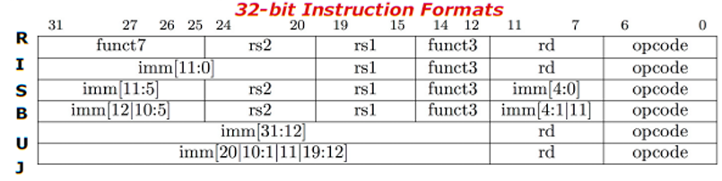
本题目从 MIPS 改编到 RV32I，原题目答案是 B 但是我改了数据所以选 C，不要盲信答案，程序验证如下（从0x08到0x10跳了8 bytes）：
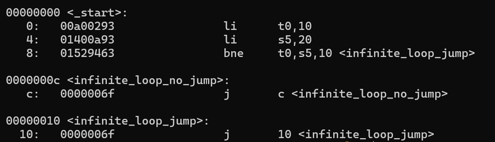
5、下列寄存器中,汇编语言程序员可见的是( ) I.指令寄存器 II. 微指令寄存器 III. 基址寄存器 IV. 标志/状态寄存器
A. 仅I、II
B. 仅I、IV
C. 仅II、IV
D. 仅III、IV
D。
IF 阶段取指令到指令寄存器，无论如何都不会把这个寄存器暴露出来。
微指令寄存器更为底层了，也用不上。
基址寄存器就是 x86-64 的 rbp 寄存器，然后坐我旁边的某个传奇盘姓 pwn 手把这个选漏了。
标志/状态寄存器间接可见，比如说
test之后再jz就用到了 ZF 标志位。（怎么全是 x86 汇编啊……）
6、由于在数据通路中存在多个源部件向单个部件发送数据,可能会导致冲突,因此需在基本结构上添加多路选择器,这些多路选择器如何选择哪条通路应该由什么来决定?( )
A. 指令寄存器
B. 程序计数器
C. 算术运算器
D. 控制器
D。
前三个有点离谱。
7、下列关于数据通路的叙述中,错误的是 ( )
A. 数据通路包含ALU等组合逻辑(操作)元件
B. 数据通路包含寄存器等时序逻辑(状态)元件
C. 数据通路不包含用于异常事件检测及响应的电路
D. 数据通路中的数据流动路径由控制信号进行控制
C。
除 0 异常就需要在数据通路中检测。
8、下列选项中, 能引起外部中断的事件是( )
A. 键盘输入
B. 除数为0
C. 浮点运算下溢
D. 访存缺页
A。
定义。
9、假定执行一条指令最多划分为IF、ID、EX、MEM、WB等5个阶段,各阶段时间分别为:IF阶段180ps,ID阶段150ps,EX阶段200ps,MEM阶段220ps,WB阶段150ps,对于指令addi t1, t2, 20,分别按照单周期方式、多周期方式、流水线方式执行,则执行该单条指令花费总时间最少的方式是:( )
A. 单周期方式
B. 多周期方式
C. 流水线方式
D. 不确定
B。
原题，不解释。
10、某机器具备2级缓存,其中L1 Cache命中率为90%,访问时间1T;L2 Cache命中率为80%,访问时间10T;主存访问时间100T｡则该2级缓存总的有效访问时间是:( ) A.1.9T
B.3.7T
C.4.0T
D.5.5T
C。
1 + 0.1 * 10 + 0.02 * 100 = 4
二、指令设计题(共15分)¶
假定计算机M字长为16位,按字节编址,连接CPU和主存的系统总线中地址线为20位、数据线为8位,采用16位定长指令字,指令格式及其说明如下:
| 格式 | 6位 | 2位 | 2位 | 2位 | 4位 |
|---|---|---|---|---|---|
| R型 | 000000 | rs2 | rs1 | rd | op1 |
| I型 | op2 | rs2 | rs1 | imm | - |
| J型 | op3 | target | - | - | - |
指令功能或指令类型说明：
- R型：R[rd]<- R[rs1] op1 R[rs2]
- I型、J型：含ALU运算、条件转移和访存操作3类指令
其中,op1~op3为操作码,rs、rt、和rd为通用寄存器编号,R[r]表示寄存器r的内容,imm为立即数,target为转移目标的形式地址｡请回答下列问题｡
(1) ALU的宽度是多少位?可寻址主存空间大小为多少字节?指令寄存器、主存地址寄存器(MAR)和主存数据寄存器(MDR)分别应有多少位?(4分)
ALU 的单位和通用寄存器的单位一致，也就是一个机器字长，即 16位。
可寻址主存空间就是地址线能表达的地址范围，因此是 2^20 字节。
指令寄存器的宽度就是每一条指令的宽度，16 位。
MAR 和 MDR 的宽度和对应数据线的位宽一致，分别是 20 位和 8 位。
(2) R型格式最多可定义多少种操作?I型和J型格式总共最多可定义多少种操作?通用寄存器最多有多少个?(3分)
根据 op 码的宽度决定。R 型 2^4 = 16 个，I 型和 J 型 2^6-1 = 63 个（扣除 R 型的那个）。通用寄存器的数量由预留给它的宽度决定：2^2 = 4 个。
(3) 假定op1为0010和0011时,分别表示带符号整数减法和带符号整数乘法指令,则指令01B2H的功能是什么(参考上述指令功能说明的格式进行描述)?若1、2、3号通用寄存器当前内容分别为B052H、0008H、0020H,则分别执行指令01B2H和01B3H后,3号通用寄存器内容各是什么?各自结果是否溢出?(6分)
(4) 若采用I型格式的访存指令中imm(偏移量)为带符号整数,则地址计算时应对imm进行零扩展还是符号扩展?(1分)
符号扩展。因为我们可能涉及到正/负方向的偏移。
(5) 无条件转移指令可以采用上述哪种指令格式?(1分)
I 型（jalr）或者 J 型（jal）格式。
三、计算题(共25分)¶
1、若 \(X=9.625\) ,以IEEE754单精度数表示, \(Y=-67\) ,以32位整形补码表示｡
(1) 若依次将X、Y以大数端存放方式写入从起始地址2020H开始的内存区域,请以图示方式描述出X和Y在内存中的十六进制形式｡(6分)
(2) 若某程序进行了 \(Z=X+Y\) 计算,请按照浮点运算方法计算出 \(Z\),结果以十六进制形式表示｡(6分)
2、假定一个磁盘的转速为7200RPM,磁盘的平均寻道时间为8ms,内部数据传输率为4MB/s,不考虑排队等待时间,则读一个512B扇区的平均时间大约为多少毫秒?结果保留两位小数｡(6分)
计算方法：磁头就位（磁头寻道时间）+盘片就位（期望的旋转时间）+数据就位（传输时间）+主控、排队等其他开销。
磁头：8ms
盘片：期望转 ½ 转转到，因此时间是 ½ * 1/7200 min = ½ * 1/120 s = 1000/240 ms = 4.17ms
数据：4MB/s 对应 4KB/ms 而 512B = 0.5KB，仅需 0.125ms
总耗时：8+4.17+0.13 = 12.30 ms
3、假定主存地址为32位,按字节编址,主存和Cache之间采用直接映射方式,主存块大小为4个字,每字32位,采用回写方式,则能存放4K字数据的Cache的总容量按位计算至少是多少?(7分)
每个块是 4 个字，也就是 16 字节，需要 4 bits 的偏移位，Cache 一共 1K 行，每一行需要 10 bits 的 index 位，所以 tag 需要 32 - 10 - 4 = 18 位，同时需要 1 bit 的有效位和 1 bit 的脏位。因为是直接映射，没有组相联，因此不需要设计LRU计数位，这样元数据就需要 20 bits，而数据是 4 * 32 = 128 bits，每一行 Cache 的宽度就是 148 bits，因此至少需要 148 * 1024 = 151552 bits 的容量。
四、编码设计题(共8分)¶
为保证在小于1位错情况下8位数据的可靠传输,为之设计海明校验码SEC(1位纠错),要求海明位编号是从MSB(Most Significant Bit)向LSB(Least Significant Bit)方向增大｡请问答:
(1) 需要设置多少校验位才能实现该海明校验码SEC,并给出原因｡(2分)
(2) 针对该海明码,如果接收端收到的编码为0x945,判断是否出错?若有错误,请指出正确的数据信息,并给出计算过程｡(6分)
单纠错码设计，就是经典的海明码，高位向低位增大，编码如下：
五、处理器设计题(共20分)¶
以下是一段 RV32I 指令序列:
(1) 哪些指令之间发生数据相关?请以“第x条指令与第y条指令关于z相关”的形式描述数据相关｡(5分)
I1 和 I2 关于寄存器 t1 相关。
I2 和 I3 关于寄存器 t1 相关。
I3 和 I4 关于寄存器 t1 相关。
I4 和 I5 关于寄存器 t0 相关。
I6 和 I1 关于寄存器 s3 相关。
(2) 哪些指令执行会发生控制相关?(2分)
两条跳转指令打乱了 PC 的值，因此是 I5 和 I7。
(3) 如果不采用“转发”技术进行数据冒险处理,那么应该在何处、加入几条nop指令才能避免数据冒险?(3分)
看上图，上一条指令 WB 后，再下一条指令是 nop 的 WB 段，再下面是 nop 的 M 段，再下才是新指令的 EX 段，因此需要在 I1, I2, I3, I4 三条指令后插入两条 nop 指令；I6 和 I1 的数据冒险，将会在第 6 问解决 j 指令的控制冒险的时候一并解决。
(4) 假定采用“转发”技术,是否可以完全解决冒险?如果不行,需要在发生数据相关的指令前加几条nop指令,才能使这段指令的执行消除数据冒险?(3分)
不可以，I4 和 I5 之间发生 Load-Use 冒险，需再加一条 nop 才能消除，其他的指令都可以通过转发解决冒险。
(5) 对于第5条分支指令引起的控制冒险,假定将检测结果是否为“零”并更新PC的操作放在“访存(Mem)”阶段进行,在何处加入几条nop指令可以消除分支冒险?若将检测结果是否为“零”并更新PC的操作放在“执行(Ex)”阶段进行,则在何处加入几条nop指令可以消除分支冒险?(3分)
参考上面的流水线图，M 段前面积累了三条指令的内容，如果填充为 nop 就可以在下一条指令直接放入对应的指令 IF 段，也就是消除了分支冒险；类似地如果是 EX 段则只需要 2 个 nop 指令。
这其实就是软件实现分支延迟槽的设计。
(6) 对于第7条指令,假定更新PC的操作在“执行(EX)”阶段进行,则流水线会被阻塞几个时钟周期?假定更新PC的操作在“译码(ID)”阶段进行,流水线又将被阻塞几个时钟周期?(4分)
和上面一问类似，只不过这一问考察硬件层面的流水线阻塞，原理是类似地，只不过把软件 nop 指令换成硬件流水线阻塞了，计算方式是一样滴，就是算把下一条指令的 IF 挪到 PC 更新后的那个段需要几个周期：EX 段阻塞 2 周期，ID 段阻塞 1 周期。
六、虚拟存储器分析题(共12分)¶
某计算机采用页式虚拟存储管理方式,按字节编址,虚拟地址为32位,物理地址为24位,页大小为4KB;TLB采用全相联映射;Cache数据区大小为64KB,Cache数据块大小为128B,按2路组相联方式组织｡存储访问过程的示意图如下。
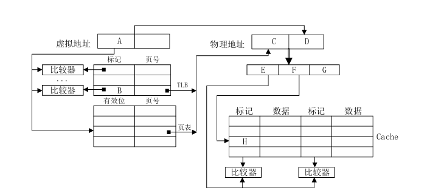
部分页表内容:
| 虚拟页号 | 有效位 | 物理页号 |
|---|---|---|
| ... | ... | ... |
| 0x12345 | 1 | 0x012 |
| 0x12346 | 1 | 0x123 |
| 0x12347 | 0 | 0x088 |
| ... | ... | ... |
请回答下列问题｡
(1) 图中字段A~G的位数各是多少? (7分)
CPU 进行访存首先将虚拟地址拆成 vtag 和 vindex，再利用 vtag 在 TLB 里面找到物理页框号，和 vindex 拼接成真实物理地址，这个物理地址再拆成 tag, index 和 block offset，送入组相联 cache。
由于 vindex 的范围是 4KB，因此 vtag 需要 20 bits 的宽度，也就是 A 和 B 的宽度；而 C+D 的宽度和物理地址一致，则 C 需要 12 bits 的宽度，D 和 vindex 的宽度一致，需要 12 bits。cache 的每一组是 2 块，块内偏移量是 128 = 2^7 B，也就是说偏移需要 7bits，一共每一组 256 B，则 cache 一共 256 组，也就是说组索引需要 8bits，剩下的 24 - 7 - 8 = 9 bits 是 tag 位。也就是说 E 的宽度是 9 位，F 的宽度是 8 位，G 的宽度是 7 位。
(2) 虚拟地址0x12346789所在的页面是否在主存中?若在主存中,则该虚拟地址对应的物理地址是什么?将该主存块装入到Cache中时,所映射的Cache组号是多少?(5分)
该地址的 vtag 为 0x12346，在 TLB 中查询到有效位是 1，因此在主存中，直接拼接为 0x123789 的物理地址。
0x123789 = 0001 0010 0 | 011 0111 1 | 000 1001
Set idex = 0110 1111 = 0x6F
📝 如果您需要引用本文
Yan Li. (Nov. 29, 2025). 《计算机组成与设计》部分历年题目题解 [Blog post]. Retrieved from https://dicaeopolis.github.io/campus-sources/SDC-exams
在 BibTeX 格式中：